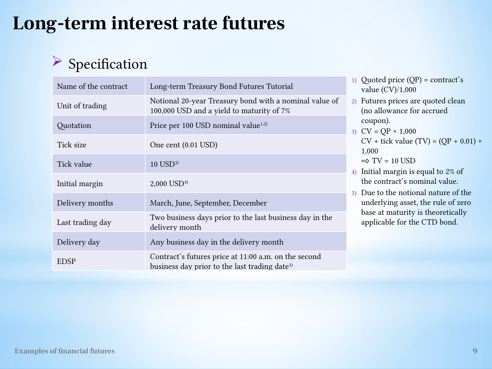
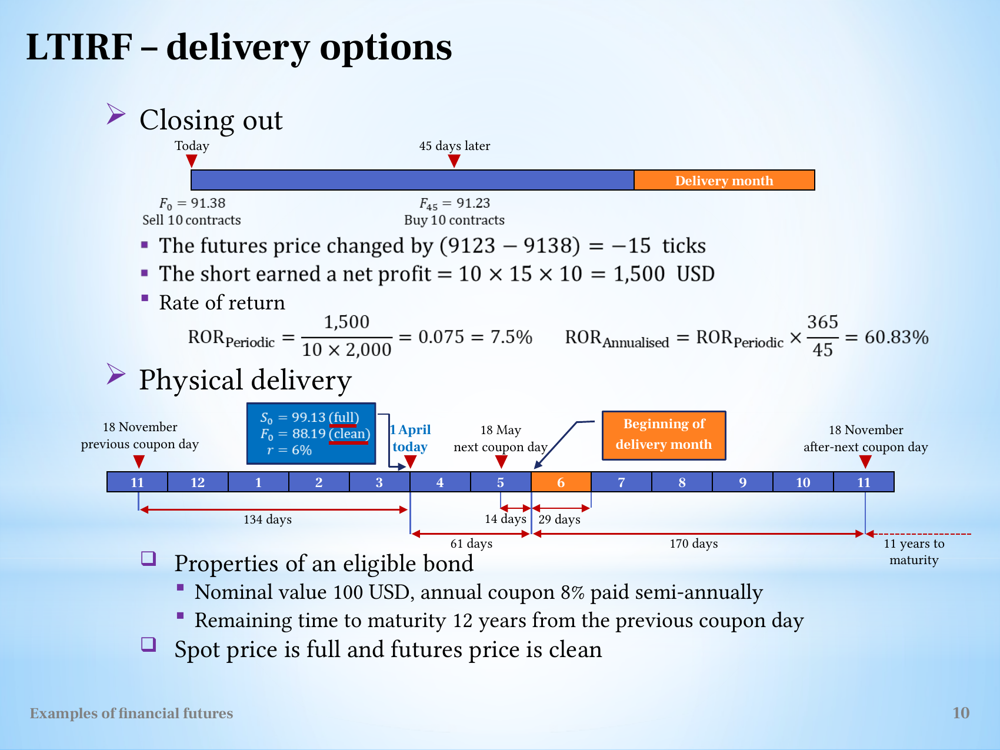

Convert bond-futures quotations into clean factors, full invoices and conditional carry
Useful first: Convert futures quotations into payoff and conditional loss bounds
Lesson outline
- 02IntroductionSee the main question, learning objectives and prerequisites.
- 03Key definitions and conceptsGet familiar with the important terms and notation.
- 04Bond futures, conversion factors and deliveryHow can one futures contract allow delivery of several real bonds when its underlying asset is a notional bond?
- 05Worked exampleFollow a complete application of the reasoning.
- 06Practise the reasoningWork through written tasks, with optional support and solutions.
- 07Check your reasoning: an offline quizCheck your choices and see feedback without a connection.
- 08Check your understandingReview the key distinctions and check what you can explain.
- 09Test yourself laterTry another prepared question before rereading.
- 10SourcesFind the materials and limits behind the lesson.
Introduction
In this lesson, convert bond-futures quotations into clean factors, full invoices and conditional carry.
2.1 What you’ll learn
- Explain clean reference valuation
- Compute a supplied bond-futures invoice/carry decision without importing inconsistent day counts.
2.2 Before you begin
Check the foundations
Short multiplier \(1000\), quote falls \(.02\): gain and currency scale?
Reveal foundation explanation
\(+20\) currency units per contract, because short sign reverses the quote change. Otherwise
Key definitions and concepts
- Clean bond price: A quote excluding accrued coupon.
- Conversion factor: The contract reference clean valuation normalized by face value.
- Full invoice: Futures clean quote times conversion factor, plus delivery accrued coupon.
Bond futures, conversion factors and delivery
How can one futures contract allow delivery of several real bonds when its underlying asset is a notional bond? Long-term bond futures specify a standardized reference instrument, then use a conversion factor to adjust the invoice for an eligible deliverable bond.
The short chooses the bond and, in this tutorial, its delivery date within the month. Those options connect bond pricing to financing and coupon income.
The lecture's hypothetical terms are recorded as supplied examples.
4.1 The notional contract and its monetary scale
The Long-term Treasury Bond Futures Tutorial refers to a notional 20-year Treasury bond with USD 100,000 face value and 7% yield to maturity. Its quotation \(QP\) is a clean price per USD 100 nominal value, excluding accrued coupon. Since \(100000/100=1000\),
where \(CV\) is contract value in dollars. A tick is USD 0.01 in the quoted price, so it changes contract value by \(1000(0.01)=\text{USD }10\).
Initial margin is USD 2,000, 2% of nominal contract value. Delivery months are March, June, September and December.
The last trading day is two business days before the last business day of the delivery month. The short can deliver on any business day of the month.
The source defines EDSP as the contract's futures price at 11:00 a.m. on the second business day before that last trading date.

The full hypothetical specification distinguishes the quotation per USD 100 from the USD 100,000 contract.
The source says the zero-basis-at-maturity rule is theoretically applicable to the CTD bond because the underlying reference bond is notional. This qualification links convergence to the eligible delivery choice rather than asserting that every bond's raw clean spot quotation equals the unadjusted futures quotation. The lecture does not derive a precise conversion-adjusted basis formula here.
4.2 A short closing trade
The short sells ten contracts at \(F_0=91.38\) and buys them back 45 days later at \(F_{45}=91.23\). The quotation fell by 15 ticks. A short benefits from that fall:
The initial-margin return is \(1500/(10\times2000)=7.5\%\). The source's simple annual scaling is \(0.075\times365/45=60.83\%\). This closes the obligation before the separate delivery illustration. Read the contract before calculating explains the common sign and margin-denominator rules.
4.3 Clean price, full price and coupon dates
A clean price excludes accrued coupon. A full price includes the compensation owed to the seller for coupon accrued since the previous coupon payment:
All quantities must use the same face-value basis. A purchase of the source's eligible bond costs a full spot price, while the contract quotes clean. This distinction is necessary when comparing the initial cash outflow with the eventual delivery invoice.
The eligible-bond example has USD 100 face value, an annual coupon of 8% paid semi-annually, hence USD 4 per coupon, and 12 years remaining from the previous coupon date. The timeline records a previous coupon on 18 November, purchase today on 1 April, the next coupon on 18 May, and the after-next coupon on 18 November.
It displays a June delivery month, initial full spot price \(S_0=99.13\), initial clean futures quotation \(F_0=88.19\), and financing rate \(r=6\%\). These values belong to the delivery example, not the earlier \(91.38\to91.23\) closing trade.

The original delivery timeline keeps coupon dates, full spot price and clean futures quotation visible. Its displayed day counts are source assumptions; related inconsistencies are discussed below.
4.4 Conversion factor: price at the contract's reference yield
A bond's conversion factor \(CF\) is its clean price per one unit of face value when valued at the contract's 7% reference yield. It is dimensionless. The exchange calculates a factor for the first day of each delivery month and keeps that factor constant during the delivery cycle, using its specified rounding conventions. The source's adjusted clean delivery price is
where \(FP\) is the contract's futures quotation. Accrued coupon must then be added to obtain the full invoice price.
A factor above one increases the clean invoice relative to \(FP\); a factor below one reduces it.
In the source's valuation example, a coupon above the 7% reference yield gives \(CF>1\), and one below it gives \(CF<1\). This is a reference-yield adjustment, rather than a claim that different eligible bonds have identical current market prices or implied repo rates.
4.5 Follow the source's valuation steps
The coupon is USD 4 every half year and the reference half-year yield is \(0.07/2=0.035\). On the after-next coupon date, the source values 22 remaining coupon payments and the final principal:
Here \(t\) counts half-year periods. Each payment is discounted to that coupon date. To obtain the full price at the beginning of June, the source adds the USD 4 coupon due at the later valuation date, then discounts back a fractional half-year. Its printed formula is
It subtracts accrued coupon for 14 days to obtain a clean price:
and divides by 100 face value to give \(CF=1.07758\). The cash-flow reasoning is: discount future full value, remove accrued coupon, normalize by face value.
4.6 The conversion-factor example has a day-count error
The printed formula's 171 days disagree with the 170 days on the source timeline and with its numerical result. Evaluating the printed expression gives approximately \(108.044\) for \(P_F\), \(107.737\) for the clean price, and \(CF\approx1.077373\).
Using 170/182.5 gives \(108.065\), \(107.758\) and \(1.07758\), matching the displayed results. These are Recomputations from the original source formula and data.
The note preserves both the printed formula and its discrepancy, rather than treating the stated factor as a verified consequence of 171 days. Use an explicitly supplied consistent factor for later calculations, or state a consistent day-count choice.

Source conversion-factor definition, coupon timeline and printed calculations. The 171-day exponent and 170-day diagram are both visible.
4.7 The short's cost-of-carry transaction
The short borrows in the money market, uses the loan to pay the full bond purchase price, and acquires the bond. During the holding period, the bond produces coupon income while the loan produces a financing cost. At delivery, the short transfers the bond to the long, receives the invoice price, and repays the loan. The source calls
It uses accrued coupon as carry revenue and interest on the financed full purchase price as carry expenditure. This sign convention matters: positive carry means that continuing to hold the financed bond earns more than it costs.

The six labeled flows show borrowing, bond acquisition, delivery, payment and loan repayment. The diagram links cash financing to the physical delivery obligation.
4.8 Delivery timing under the source's carry rule
The source's rule chooses the last business day of the delivery month when daily carry is positive, and the first business day when it is negative. Its example computes, per USD 100 face value,
so daily carry is approximately USD 0.00562. Continuing to hold adds positive carry, giving the source's choice of the last business day.
With negative carry, waiting instead erodes the transaction's return. This is the lecture's simplified constant daily-carry rule.
Its stronger sentence that in reality only the first or last business day is chosen is retained as a source assertion, not expanded into a universal market rule beyond the illustration.
4.9 What to carry forward
The contract quotation, full bond purchase price and full invoice price have different roles. Conversion factors adjust the clean delivery amount for a chosen bond, while accrued coupon completes the invoice.
Carry links the bond's income to the financing cost and determines the source's delivery-date choice. Implied repo rate and cheapest to deliver develops the next question: which eligible bond gives the greatest return from purchase to delivery?
Worked example
Prompt: Hypothetical supplied bond contract quote is clean per100 face, face100000 so multiplier1000, tick0.01 and margin USD2000 each. A short 10 opens 91.38, closes 91.23.
Separately an eligible delivery bond has futures price88.19, declared clean conversion factor1.07758, delivery accrued coupon1 per100, full purchase price99.13, annual coupon8 per100 and annual simple funding6%. Compute tick/P&L/margin return, full invoice and daily carry;
explain delivery timing under the source constant-carry rule. Derive the generic conversion-factor valuation sequence from coupon PV at the contract reference yield to full reference price, then clean price and normalization by100;
state why an original day-count error cannot be silently reused. Does the lowest clean bond price automatically choose CTD or does this carry rule prove every exchange optimum?
Steps and interpretation: \(\text{Tick}=.01\times1000=\mathrm{USD}10\). Short \(G=-10\times 1000\times (91.23-91.38)=\mathrm{USD}1500.000000\);
collateral \(20000\), return \(7.5\%\). \(\text{Full invoice per100}=88.19\times 1.07758+1=96.031780\); actual face \(100000\) \(\text{invoice} \times 1000=\mathrm{USD}96031.780200\). \(\text{Daily carry per100}=8/365-99.13\times 0.06/365=0.005622466\);
positive chooses last allowed day, negative first, under the supplied constant-carry simplification. \(\mathrm{CF}\): discount every remaining coupon plus principal \(100\) at the specified reference periodic yield, add the coupon due at the later valuation date, discount that combined value BACK to the earlier valuation date by the declared fractional period, subtract reference-date accrued coupon, divide clean reference price by \(100\). \(\mathrm{CF}\) is dimensionless and fixed for the delivery month; invoice then adds actual delivery accrued coupon.
Source170/171-day inconsistency is disclosed; a consistent declared timeline is needed for numerical valuation.
Lowest clean price alone is not CTD; compare eligible bonds'
implied repo rates on common assumptions. Actual carry/date choices can require cash-flow-specific terms, so this first/last-day simplification is not universal.
Practise the reasoning
Write your reasoning before revealing an explanation. Begin with support, then apply the ideas to another situation.
6.1 Written exercise 1
Hypothetical supplied bond contract quote is clean per100 face, face100000 so multiplier1000, tick0.01 and margin USD2000 each.
Solve the following:
- A short 2 opens 96.00, closes 95.90.
- Separately an eligible delivery bond has futures price94, declared clean conversion factor1.02, delivery accrued coupon0.5 per100, full purchase price100, annual coupon4 per100 and annual simple funding6%.
- Compute tick/P&L/margin return, full invoice and daily carry;
- explain delivery timing under the source constant-carry rule.
- Derive the generic conversion-factor valuation sequence from coupon PV at the contract reference yield to full reference price, then clean price and normalization by100;
- state why an original day-count error cannot be silently reused.
- Does the lowest clean bond price automatically choose CTD or does this carry rule prove every exchange optimum?
Show a hint
Pause before calculating or choosing an explanation:
- What quantities, actors or outcomes are being compared? Write their roles, units and dates beside them.
- Which condition decides whether the relationship applies? Check the relevant definition before using a formula or classifying the case.
- What would have to remain fixed for your comparison to be meaningful? Work through one link in the reasoning at a time.
- How could you check the direction, boundary case or alternative explanation before stating your conclusion?
A local draft for your own study.
Reveal explanation
Key: \(\text{Tick}=.01\times1000=\mathrm{USD}10\). Short \(G=-2\times 1000\times (95.90-96.00)=\mathrm{USD}200.000000\);
collateral \(4000\), return \(5\%\). \(\text{Full invoice per100}=94\times 1.02+0.5=96.380000\); actual face \(100000\) \(\text{invoice} \times 1000=\mathrm{USD}96380.000000\). \(\text{Daily carry per100}=4/365-100\times 0.06/365=-0.005479452\);
positive chooses last allowed day, negative first, under the supplied constant-carry simplification. \(\mathrm{CF}\): discount every remaining coupon plus principal \(100\) at the specified reference periodic yield, add the coupon due at the later valuation date, discount that combined value BACK to the earlier valuation date by the declared fractional period, subtract reference-date accrued coupon, divide clean reference price by \(100\). \(\mathrm{CF}\) is dimensionless and fixed for the delivery month; invoice then adds actual delivery accrued coupon.
Source170/171-day inconsistency is disclosed; a consistent declared timeline is needed for numerical valuation.
Lowest clean price alone is not CTD; compare eligible bonds'
implied repo rates on common assumptions. Actual carry/date choices can require cash-flow-specific terms, so this first/last-day simplification is not universal.
6.2 Written exercise 2
Hypothetical supplied bond contract quote is clean per100 face, face100000 so multiplier1000, tick0.01 and margin USD2000 each.
Solve the following:
- A short 3 opens 89.00, closes 89.20.
- Separately an eligible delivery bond has futures price90, declared clean conversion factor0.98, delivery accrued coupon1.2 per100, full purchase price96, annual coupon8 per100 and annual simple funding5%.
- Compute tick/P&L/margin return, full invoice and daily carry;
- explain delivery timing under the source constant-carry rule.
- Derive the generic conversion-factor valuation sequence from coupon PV at the contract reference yield to full reference price, then clean price and normalization by100;
- state why an original day-count error cannot be silently reused.
- Does the lowest clean bond price automatically choose CTD or does this carry rule prove every exchange optimum?
A local draft for your own study.
Reveal explanation
Explanation: \(\text{Tick}=.01\times1000=\mathrm{USD}10\). Short \(G=-3\times 1000\times (89.20-89.00)=\mathrm{USD}-600.000000\);
collateral \(6000\), return \(-10\%\). \(\text{Full invoice per100}=90\times 0.98+1.2=89.400000\); actual face \(100000\) \(\text{invoice} \times 1000=\mathrm{USD}89400.000000\). \(\text{Daily carry per100}=8/365-96\times 0.05/365=0.008767123\);
positive chooses last allowed day, negative first, under the supplied constant-carry simplification. \(\mathrm{CF}\): discount every remaining coupon plus principal \(100\) at the specified reference periodic yield, add the coupon due at the later valuation date, discount that combined value BACK to the earlier valuation date by the declared fractional period, subtract reference-date accrued coupon, divide clean reference price by \(100\). \(\mathrm{CF}\) is dimensionless and fixed for the delivery month; invoice then adds actual delivery accrued coupon.
Source170/171-day inconsistency is disclosed; a consistent declared timeline is needed for numerical valuation.
Lowest clean price alone is not CTD; compare eligible bonds'
implied repo rates on common assumptions. Actual carry/date choices can require cash-flow-specific terms, so this first/last-day simplification is not universal.
All components are required.
6.3 Written exercise 3
Hypothetical supplied bond contract quote is clean per100 face, face100000 so multiplier1000, tick0.01 and margin USD2000 each.
Solve the following:
- A short 4 opens 102.00, closes 101.80.
- Separately an eligible delivery bond has futures price99, declared clean conversion factor1.03, delivery accrued coupon0.8 per100, full purchase price104, annual coupon5 per100 and annual simple funding7%.
- Compute tick/P&L/margin return, full invoice and daily carry;
- explain delivery timing under the source constant-carry rule.
- Derive the generic conversion-factor valuation sequence from coupon PV at the contract reference yield to full reference price, then clean price and normalization by100;
- state why an original day-count error cannot be silently reused.
- Does the lowest clean bond price automatically choose CTD or does this carry rule prove every exchange optimum?
A local draft for your own study.
Reveal explanation
Explanation: \(\text{Tick}=.01\times1000=\mathrm{USD}10\). Short \(G=-4\times 1000\times (101.80-102.00)=\mathrm{USD}800.000000\);
collateral \(8000\), return \(10\%\). \(\text{Full invoice per100}=99\times 1.03+0.8=102.770000\); actual face \(100000\) \(\text{invoice} \times 1000=\mathrm{USD}102770.000000\). \(\text{Daily carry per100}=5/365-104\times 0.07/365=-0.006246575\);
positive chooses last allowed day, negative first, under the supplied constant-carry simplification. \(\mathrm{CF}\): discount every remaining coupon plus principal \(100\) at the specified reference periodic yield, add the coupon due at the later valuation date, discount that combined value BACK to the earlier valuation date by the declared fractional period, subtract reference-date accrued coupon, divide clean reference price by \(100\). \(\mathrm{CF}\) is dimensionless and fixed for the delivery month; invoice then adds actual delivery accrued coupon.
Source170/171-day inconsistency is disclosed; a consistent declared timeline is needed for numerical valuation.
Lowest clean price alone is not CTD; compare eligible bonds'
implied repo rates on common assumptions. Actual carry/date choices can require cash-flow-specific terms, so this first/last-day simplification is not universal.
All components are required.
6.4 Another chance to practise
Fresh narrow check: futures clean quote \(80\), \(\mathrm{CF}=1.10\), delivery \(\mathrm{AC}=2\) per \(100\).
Solve the following:
- Full invoice is \((80+2)\times1.10\)?
A local draft for your own study.
Reveal explanation
No:\(80\times1.10+2=90\) per \(100\). Factor scales clean reference price, while actual accrued coupon is added after.
Check your reasoning: an offline quiz
Choose one answer per question. Check individual answers or check the whole quiz. Each option includes feedback on the reasoning, and everything works offline.
Reveal explanation
Multiply the clean futures quote by the factor, then add actual delivery accrued coupon.
Reveal explanation
Positive holding income net of financing rewards retaining the asset longer under that limited rule.
Reveal explanation
Clean price is only one input; normalized delivery terms and cash-flow timing can change the ranking.
Check your understanding
Confusing clean and full invoice loses a coupon component. Keep two labelled columns: \(\text{clean} \mathrm{FP}\times \mathrm{CF}\), then delivery \(\mathrm{AC}\). Distinguish reference yield from market/funding yield.
- Explain clean reference valuation
- Compute a supplied bond-futures invoice/carry decision without importing inconsistent day counts.
Test yourself later
Return to these questions after a break, before rereading the explanation. Use a question you have not just viewed.
9.1 Review question 1
Hypothetical supplied bond contract quote is clean per100 face, face100000 so multiplier1000, tick0.01 and margin USD2000 each.
Solve the following:
- A short 5 opens 98.00, closes 98.10.
- Separately an eligible delivery bond has futures price96, declared clean conversion factor1.01, delivery accrued coupon0.4 per100, full purchase price99, annual coupon7 per100 and annual simple funding4%.
- Compute tick/P&L/margin return, full invoice and daily carry;
- explain delivery timing under the source constant-carry rule.
- Derive the generic conversion-factor valuation sequence from coupon PV at the contract reference yield to full reference price, then clean price and normalization by100;
- state why an original day-count error cannot be silently reused.
- Does the lowest clean bond price automatically choose CTD or does this carry rule prove every exchange optimum?
A local draft for your own study.
Reveal explanation
Explanation: \(\text{Tick}=.01\times1000=\mathrm{USD}10\). Short \(G=-5\times 1000\times (98.10-98.00)=\mathrm{USD}-500.000000\);
collateral \(10000\), return \(-5\%\). \(\text{Full invoice per100}=96\times 1.01+0.4=97.360000\); actual face \(100000\) \(\text{invoice} \times 1000=\mathrm{USD}97360.000000\). \(\text{Daily carry per100}=7/365-99\times 0.04/365=0.008328767\);
positive chooses last allowed day, negative first, under the supplied constant-carry simplification. \(\mathrm{CF}\): discount every remaining coupon plus principal \(100\) at the specified reference periodic yield, add the coupon due at the later valuation date, discount that combined value BACK to the earlier valuation date by the declared fractional period, subtract reference-date accrued coupon, divide clean reference price by \(100\). \(\mathrm{CF}\) is dimensionless and fixed for the delivery month; invoice then adds actual delivery accrued coupon.
Source170/171-day inconsistency is disclosed; a consistent declared timeline is needed for numerical valuation.
Lowest clean price alone is not CTD; compare eligible bonds'
implied repo rates on common assumptions. Actual carry/date choices can require cash-flow-specific terms, so this first/last-day simplification is not universal.
All components are required.
9.2 Review question 2
Hypothetical supplied bond contract quote is clean per100 face, face100000 so multiplier1000, tick0.01 and margin USD2000 each.
Solve the following:
- A short 2 opens 93.00, closes 92.70.
- Separately an eligible delivery bond has futures price92, declared clean conversion factor1.04, delivery accrued coupon1.6 per100, full purchase price101, annual coupon4 per100 and annual simple funding6%.
- Compute tick/P&L/margin return, full invoice and daily carry;
- explain delivery timing under the source constant-carry rule.
- Derive the generic conversion-factor valuation sequence from coupon PV at the contract reference yield to full reference price, then clean price and normalization by100;
- state why an original day-count error cannot be silently reused.
- Does the lowest clean bond price automatically choose CTD or does this carry rule prove every exchange optimum?
A local draft for your own study.
Reveal explanation
Explanation: \(\text{Tick}=.01\times1000=\mathrm{USD}10\). Short \(G=-2\times 1000\times (92.70-93.00)=\mathrm{USD}600.000000\);
collateral \(4000\), return \(15\%\). \(\text{Full invoice per100}=92\times 1.04+1.6=97.280000\); actual face \(100000\) \(\text{invoice} \times 1000=\mathrm{USD}97280.000000\). \(\text{Daily carry per100}=4/365-101\times 0.06/365=-0.005643836\);
positive chooses last allowed day, negative first, under the supplied constant-carry simplification. \(\mathrm{CF}\): discount every remaining coupon plus principal \(100\) at the specified reference periodic yield, add the coupon due at the later valuation date, discount that combined value BACK to the earlier valuation date by the declared fractional period, subtract reference-date accrued coupon, divide clean reference price by \(100\). \(\mathrm{CF}\) is dimensionless and fixed for the delivery month; invoice then adds actual delivery accrued coupon.
Source170/171-day inconsistency is disclosed; a consistent declared timeline is needed for numerical valuation.
Lowest clean price alone is not CTD; compare eligible bonds'
implied repo rates on common assumptions. Actual carry/date choices can require cash-flow-specific terms, so this first/last-day simplification is not universal.
All components are required.
Sources
Show materials and lesson scope
- L11(ExamplesOfFinancialFutures).pptx, slide 2
- L11(ExamplesOfFinancialFutures).pptx, slide 9
- L11(ExamplesOfFinancialFutures).pptx, slide 11
- L11(ExamplesOfFinancialFutures).pptx, slide 13
- L11(ExamplesOfFinancialFutures).pptx, slide 14
- L11(ExamplesOfFinancialFutures).pptx, slide 10
- L11(ExamplesOfFinancialFutures).pptx, slide 15
- L11(ExamplesOfFinancialFutures).pptx, slide 12
Numerical and contextual illustrations are hypothetical unless explicitly described as a reported result. Historical data, model assumptions and unresolved source differences retain their stated limits.
These exercises are for self-study. Viewing a prepared item or solution may make that item unsuitable as a fresh check in a tutor chat. This page does not record an assessed learning result.